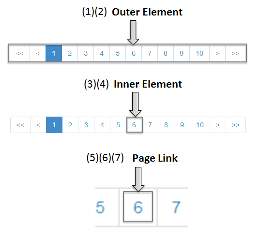
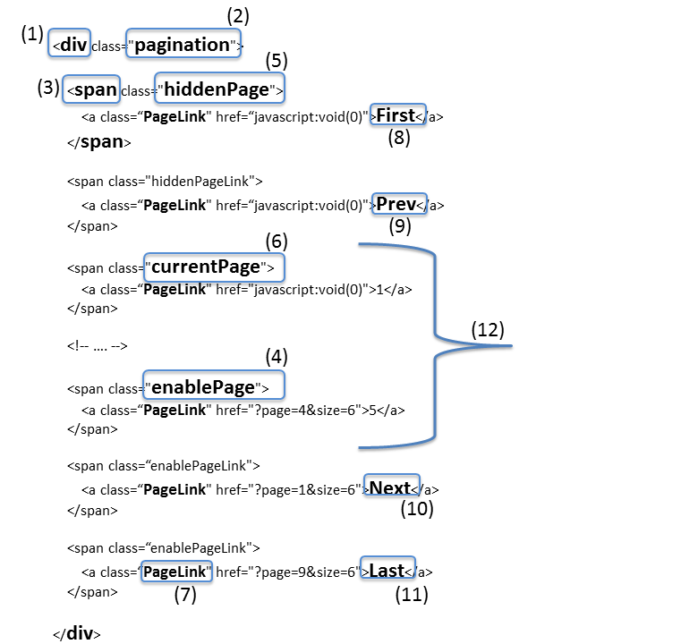
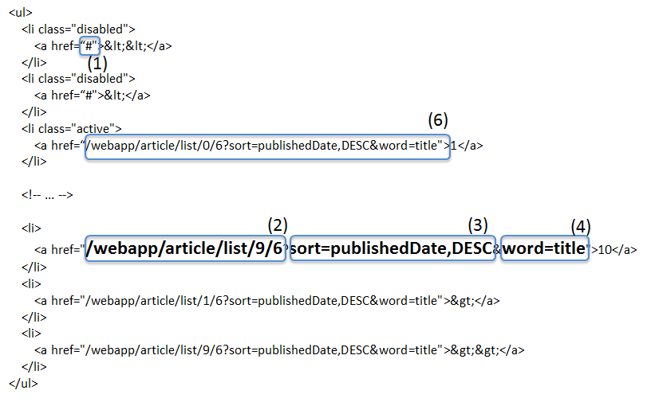
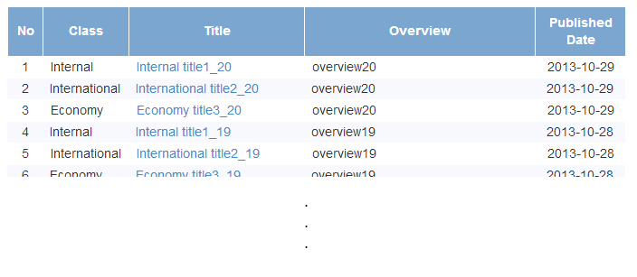
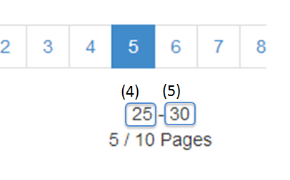
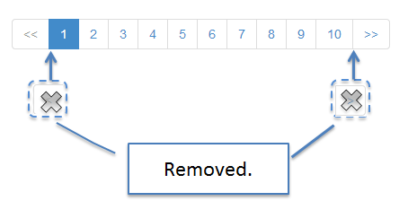
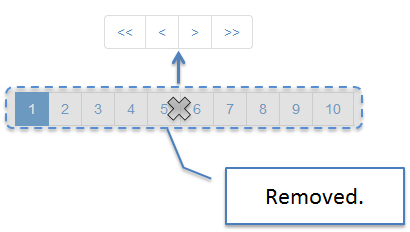

4.5. ページネーション¶
4.5.1. Overview¶
本章では、検索条件に一致するデータをページ分割して表示する方法(ページネーション)について説明する。
- サーバ側のメモリ枯渇の発生。単発のリクエストで問題が発生しなくても、同時に複数実行された場合に
java.lang.OutOfMemoryErrorが発生する可能性がある。 - ネットワーク負荷の発生。不要なデータがネットワークに流れることで、ネットワーク全体にかかる負荷が高くなり、システム全体のレスポンスタイムに影響を与える可能性がある。
- 画面のレスポンス遅延の発生。大量のデータを扱う場合、サーバの処理、ネットワークのトラフィック処理、クライアントの描画処理の全てで時間がかかるため、画面のレスポンスが遅くなる可能性がある。
4.5.1.1. ページ分割時の一覧画面の表示について¶

項番 |
説明 |
|---|---|
(1)
|
ページ検索処理で取得したデータを表示する。
|
(2)
|
ページを移動するためのリンクを表示する。
リンク押下時には、該当ページを表示するためのリクエストを送信する。
|
(3)
|
ページネーションに関連する情報(合計件数、合計ページ数、表示ページ数など)を表示する。
|
4.5.1.2. ページ検索について¶
4.5.1.2.1. Spring Data提供のページ検索機能について¶
Spring Dataより提供されているページ検索用の機能は、以下の通り。
項番 |
説明 |
|---|---|
1 |
リクエストパラメータよりページ検索に必要な情報(検索対象のページ位置、取得件数、ソート条件)を抽出し、抽出した情報を
org.springframework.data.domain.PageableのオブジェクトとしてControllerの引数に引き渡す。この機能は、
org.springframework.data.web.PageableHandlerMethodArgumentResolverクラスとして提供されており、spring-mvc.xmlの<mvc:argument-resolvers>要素に追加することで有効となる。リクエストパラメータについては、「Note欄」を参照されたい。
|
2 |
ページ情報(合計件数、該当ページのデータ、検索対象のページ位置、取得件数、ソート条件)を保持する。
この機能は、
org.springframework.data.domain.Pageインタフェースとして提供されており、デフォルトの実装クラスとしてorg.springframework.data.domain.PageImplが提供されている。
|
3 |
データベースアクセスとしてSpring Data JPAを使用する場合は、RepositoryのQueryメソッドの引数に
Pageableオブジェクトを指定することで、該当ページの情報がPageオブジェクトとして返却される。合計件数を取得するSQLの発行、ソート条件の追加、該当ページに一致するデータの抽出などの処理が全て自動で行われる。
データベースアクセスとして、MyBatisを使用する場合は、Spring Data JPAが自動で行ってくれる処理を、Java(Service)及びSQLマッピングファイル内で実装する必要がある。
|
Note
ページ検索用のリクエストパラメータについて
Spring Dataより提供されているページ検索用のリクエストパラメータは以下の3つとなる。
項番
パラメータ名
説明
page
0“ から開始する。そのため、1ページ目のデータを取得する場合は”0“を、2ページ目のデータを取得する場合は”1“を指定する必要がある。
size
PageableHandlerMethodArgumentResolverのmaxPageSizeに指定された値より大きい値が指定された場合は、maxPageSizeの値がsizeの値となる。
sort
{ソート項目名(,ソート順)}の形式で指定する。ソート順には、ASC又はDESCのどちらかの値を指定し、省略した場合はASCが適用される。項目名は”,“区切りで複数指定することが可能である。例えば、クエリ文字列としてsort=lastModifiedDate,id,DESC&sort=subIdが指定された場合、ORDER BY lastModifiedDate DESC, id DESC, subId ASCのようなOrder By句をQueryに追加することになる。
4.5.1.3. ページネーションの表示について¶
「ページ分割時の一覧画面の表示について」にて説明した画面の各要素について説明する。
4.5.1.3.1. 取得データの表示について¶
4.5.1.3.2. ページネーションリンクの表示について¶
<t:pagination>のデフォルト設定で出力されるHTMLを例に、ページネーションリンクの実装例を説明する。4.5.1.3.2.1. ページネーションリンクの構成¶
ページネーションリンクは、以下の要素から構成される。

項番 |
説明 |
|---|---|
(1)
|
最初のページに移動するためのリンク。
|
(2)
|
前のページに移動するためのリンク。
|
(3)
|
指定したページに移動するためのリンク。
|
(4)
|
次のページに移動するためのリンク。
|
(5)
|
最後のページに移動するためのリンク。
|
ページネーションリンクは、以下の状態をもつ。
{kind=link}
項番 |
説明 |
|---|---|
(6)
|
現在表示しているページで操作することができないリンクであることを示す状態。
具体的には、1ページ目を表示している時の「最初のページに移動するためのリンク」「前のページに移動するためのリンク」と、最終ページを表示している時の「次のページに移動するためのリンク」「最後のページに移動するためのリンク」がこの状態となる。
この状態を
disabledと定義する。 |
(7)
|
現在表示しているページであることを示す状態。
この状態を
activeと定義する。 |
<t:pagination page="${page}" />
Todo
ThymeleafのDialectは次版以降に作成予定となる。
出力されるHTML

4.5.1.3.2.2. ページネーションリンクのHTML構造¶
ページネーションリンクのHTMLは、以下の構造となる。
TERASOLUNA共通ライブラリで提供しているJSPタグを使用する。
HTML

画面イメージ
 項番
説明
デフォルト値
(1)ページネーションリンクの構成要素をまとめるための要素。共通ライブラリでは、この部分を「Outer Element」と呼び、複数の「Inner Element」を保持する。使用する要素は、JSPタグライブラリのパラメータによって変更することが出来る。<ul>要素(2)「Outer Element」のスタイルクラスを指定するための属性。共通ライブラリでは、この部分を「Outer Element Class」と呼び、属性値はJSPタグライブラリのパラメータによって指定する。指定なし(3)ページネーションリンクを構成するための要素。共通ライブラリでは、この部分を「Inner Element」と呼び、ページ移動するためのリクエストを送信するための<a>要素を保持する。使用する要素は、JSPタグライブラリのパラメータによって変更することが出来る。<li>要素(4)「Inner Element」のスタイルクラスを指定するための属性。共通ライブラリでは、この部分を「Inner Element Class」と呼び、属性値は表示しているページ位置によってJSPタグライブラリ内の処理で切り替わる。「Note欄」を参照されたい。(5)ページ移動するためのリクエストを送信するための要素。共通ライブラリでは、この部分を「Page Link」と呼ぶ。<a>要素固定(6)ページ移動するためのURLを指定するための属性。共通ライブラリでは、この部分を「Page Link URL」と呼ぶ。下記の「Note欄」を参照されたい。(7)ページ移動するためのリンクの表示テキストを指定する。共通ライブラリでは、この部分を「Page Link Text」と呼ぶ。下記の「Note欄」を参照されたい。Note
「Inner Element」の数について
デフォルトの設定では、「Inner Element」は最大で14個となる。内訳は以下の通り。
最初のページに移動するためのリンク : 1
前のページに移動するためのリンク : 1
指定したページに移動するためのリンク : 最大10
次のページに移動するためのリンク : 1
最後のページに移動するためのリンク : 1
「Inner Element」の数は、JSPタグライブラリのパラメータの指定によって変更することができる。
{kind=link}
Note
「Inner Element Class」の設定値について
デフォルトの設定では、ページ位置によって、以下3つの値となる。
disabled: 現在表示しているページでは操作することができないリンクであることを示すためのスタイルクラス。
active: 現在表示しているページのリンクであることを示すためのスタイルクラス。指定なし : 上記以外のリンクであることを示す。
disabledとactiveは、JSPタグライブラリのパラメータの指定によって別の値に変更することができる。
Note
「Page Link URL」のデフォルト値について
リンクの状態が
disabledとactiveの場合はjavascript:void(0)、それ以外の場合は?page={page}&size={size}となる。「Page Link URL」は、JSPタグライブラリのパラメータの指定によって別の値に変更することができる。
Note
「Page Link Text」のデフォルト値について
項番
リンク名
デフォルト値
最初のページに移動するためのリンク
<<
前のページに移動するためのリンク
<
指定したページに移動するためのリンク
次のページに移動するためのリンク
>
最後のページに移動するためのリンク
>>「指定したページに移動するためのリンク」以外は、JSPタグライブラリのパラメータの指定によって、別の値に変更することができる。
4.5.1.3.2.3. JSPタブライブラリのパラメータについて¶
JSPタグライブラリのパラメータに値を指定することで、デフォルト動作を変更することができる。
以下にパラメータの一覧を示す。
レイアウトを制御するためのパラメータ
項番 |
パラメータ名 |
説明 |
|---|---|---|
outerElement |
「Outer Element」として使用するHTML要素名を指定する。
例) div
|
|
outerElementClass |
「Outer Element」のclass属性に設定するスタイルシートのクラス名を指定する。
例) pagination
|
|
innerElement |
「Inner Element」として使用するHTML要素名を指定する。
例) span
|
|
innerElementClass |
「Inner Element」のclass属性に設定するスタイルシートのクラス名を指定する。5.6.0から追加
例) enablePage
|
|
disabledClass |
disabled状態と判断された「Inner Element」のclass属性に設定する値を指定する。例) hiddenPage
|
|
activeClass |
active状態の「Inner Element」のclass属性に設定する値を指定する。例) currentPage
|
|
anchorClass |
「Page Link」のclass属性に設定するスタイルシートのクラス名を指定する。5.7.0から追加
例) pageLink
|
|
firstLinkText |
「最初のページに移動するためのリンク」の「Page Link Text」に設定する値を指定する。
""を指定すると、「最初のページに移動するためのリンク」自体が出力されなくなる。例) First
|
|
previousLinkText |
「前のページに移動するためのリンク」の「Page Link Text」に設定する値を指定する。
""を指定すると、「前のページに移動するためのリンク」自体が出力されなくなる。例) Prev
|
|
nextLinkText |
「次のページに移動するためのリンク」の「Page Link Text」に設定する値を指定する。
""を指定すると、「次のページに移動するためのリンク」自体が出力されなくなる。例) Next
|
|
lastLinkText |
「最後のページに移動するためのリンク」の「Page Link Text」に設定する値を指定する。
""を指定すると、「次のページに移動するためのリンク」自体が出力されなくなる。例) Last
|
|
maxDisplayCount |
「指定したページに移動するためのリンク」の最大表示数を指定する。
“
0“ を指定すると、「指定したページに移動するためのリンク」自体が出力されなくなる。例) 5
|
JSP
<t:pagination page="${page}" outerElement="div" outerElementClass="pagination" innerElement="span" innerElementClass="enablePage" disabledClass="hiddenPage" activeClass="currentPage" anchorClass="pageLink" firstLinkText="First" previousLinkText="Prev" nextLinkText="Next" lastLinkText="Last" maxDisplayCount="5" />
出力されるHTML

{kind=link}
動作を制御するためのパラメータ
項番 |
パラメータ名 |
説明 |
|---|---|---|
disabledHref |
disabled状態のリンクの「Page Link URL」に設定する値を指定する。 |
|
pathTmpl |
「Page Link URL」に設定するリクエストパスのテンプレートを指定する。
ページ表示時のリクエストパスとページ移動するためのリクエストパスが異なる場合は、このパラメータにページ移動用のリクエストパスを指定する必要がある。
指定するリクエストパスのテンプレートには、ページ位置(page)や取得件数(size)などをパス変数(プレースホルダ)として指定することができる。
指定した値はUTF-8でURLエンコーディングされる。
|
|
queryTmpl |
「Page Link URL」のクエリ文字列のテンプレートを指定する。
ページ移動する際に必要となるページネーション用のクエリ文字列(page,size,sortパラメータ)を生成するためのテンプレートを指定する。
ページ位置や取得件数のリクエストパラメータ名をデフォルト以外の値にする場合は、このパラメータにクエリ文字列を指定する必要がある。
指定するクエリ文字列のテンプレートには、ページ位置(page)や取得件数(size)などをパス変数(プレースホルダ)として指定することができる。
指定した値はUTF-8でURLエンコーディングされる。
この属性は、ページネーション用のクエリ文字列(page,size,sortパラメータ)を生成するための属性であるため、検索条件を引き継ぐためのクエリ文字列はcriteriaQuery属性に指定すること。
|
|
criteriaQuery |
「Page Link URL」に追加する検索条件用のクエリ文字列を指定する。
「Page Link URL」に検索条件を引き継ぐ場合は、このパラメータに検索条件用のクエリ文字列を指定すること。
指定した値はURLエンコーディングされないため、URLエンコーディング済みのクエリ文字列を指定する必要がある。
フォームオブジェクトに格納されている検索条件をURLエンコーディング済みのクエリ文字列に変換する場合は、共通ライブラリから提供しているELファンクション(
f:query(Object))を使用すると、簡単に条件を引き継ぐことができる。 |
|
disableHtmlEscapeOfCriteriaQuery |
criteriaQueryパラメータに指定された値に対するHTMLエスケープ処理を無効化するためのフラグ。trueを指定する事で、criteriaQueryパラメータに指定された値に対してHTMLエスケープ処理が行われなくなる。(デフォルト値はfalse)trueを指定する場合は、XSS対策が必要な文字がクエリ文字列内に含まれない事が保証されていること。
|
|
enableLinkOfCurrentPage |
active状態のページリンクを押下した際に、該当ページを再表示するためのリクエストを送信するためのフラグ。trueを指定する事で、「Page Link URL」に該当ページを再表示するためのURL(デフォルト値は?page={page}&size={size})が設定される。(デフォルト値はfalseで、「Page Link URL」にはdisabledHref属性の値が設定される) |
Note
disabledHrefの設定値について
デフォルトでは、disabledHref属性にはjavascript:void(0)が設定されている。ページリンク押下時の動作を無効化するだけであれば、デフォルトのままでよい。
ただし、デフォルトの状態でページリンクにフォーカスを移動又はマウスオーバーした場合、ブラウザのステータスバーにjavascript:void(0)が表示されることがある。この挙動を変えたい場合は、JavaScriptを使用してページリンク押下時の動作を無効化する必要がある。実装例については、「JavaScriptを使用したページリンクの無効化」を参照されたい。
Note
パス変数(プレースホルダ)について
pathTmpl及びqueryTmplに指定できるパス変数は、以下の通り。
項番
パス変数名
説明
page
ページ位置を埋め込むためのパス変数。
size
取得件数を埋め込むためのパス変数。
sortOrderProperty
ソート条件のソート項目を埋め込むためのパス変数。
sortOrderDirection
ソート条件のソート順を埋め込むためのパス変数。
パス変数は、{パス変数名}の形式で指定する。
Warning
ソート条件の制約事項
ソート条件のパス変数に設定される値は、ひとつのソート条件のみとなっている。そのため、複数のソート条件を指定して検索した結果を、ページネーション表示する必要がある場合は、共通ライブラリから提供しているJSPタグライブラリを拡張する必要がある。
JSP
<t:pagination page="${page}" disabledHref="#" pathTmpl="${pageContext.request.contextPath}/article/list/{page}/{size}" queryTmpl="sort={sortOrderProperty},{sortOrderDirection}" criteriaQuery="${f:query(articleSearchCriteriaForm)}" enableLinkOfCurrentPage="true" />
出力されるHTML

{kind=link}
4.5.1.3.3. ページネーション情報の表示について¶
合計件数
検索対象のページ位置
取得件数
ソート条件
4.5.1.4. ページネーション機能使用時の処理フロー¶
{kind=link}
項番 |
説明 |
|---|---|
(1)
|
検索条件と共に、リクエストパラメータとして検索対象のページ位置(page)と取得件数(size)を指定してリクエストを送信する。
|
(2)
|
PageableHandlerMethodArgumentResolverは、リクエストパラメータに指定されている検索対象のページ位置(page)と取得件数(size)を取得し、Pageableオブジェクトを生成する。生成された
Pageableオブジェクトは、Controllerのハンドラメソッドの引数に設定される。 |
(3)
|
Controllerは、引数で受け取った
Pageableオブジェクトを、Serviceのメソッドに引き渡す。 |
(4)
|
Serviceは、引数で受け取った
Pageableオブジェクトを、RepositoryのQueryメソッドに引き渡す。 |
(5)
|
Repositoryは、検索条件に一致するデータの合計件数(totalElements)と、引数で受け取った
Pageableオブジェクトに指定されているページ位置(page)と取得件数(size)の範囲に存在するデータを、データベースより取得する。 |
(6)
|
Repositoryは、取得した合計件数(totalElements)、取得データ(content)、引数で受け取った
PageableオブジェクトよりPageオブジェクトを作成し、Service及びControllerへ返却する。 |
(7)
|
Controllerは、返却された
Pageオブジェクトを、Modelオブジェクトに格納後、JSPに遷移する。 |
(8)
|
JSPは、
Modelオブジェクトに格納されているPageオブジェクトを取得し、共通ライブラリから提供されているページネーション用のJSPタグライブラリ(<t:pagination>)を呼び出す。ページネーション用のJSPタグライブラリは
Pageオブジェクトを参照し、ページネーションリンクを生成する。 |
(9)
|
JSPで生成したHTMLを、クライアント(ブラウザ)に返却する。
|
(10)
|
ページネーションリンクを押下すると、該当ページを表示するためリクエストが送信される。
|
Note
Repositoryの実装について
上記フローの(5)と(6)の処理は、使用するO/R Mapperによって実装方法が異なる。
MyBatis3を使用する場合は、Java(Service)及びSQLマッピングファイルの実装が必要である。
Spring Data JPAを使用する場合は、Spring Data JPAの機能で自動的で行われるため実装は不要である。
具体的な実装例については、
を参照されたい。
{kind=link}
項番 |
説明 |
|---|---|
(1)
|
検索条件と共に、リクエストパラメータとして検索対象のページ位置(page)と取得件数(size)を指定してリクエストを送信する。
|
(2)
|
PageableHandlerMethodArgumentResolverは、リクエストパラメータに指定されている検索対象のページ位置(page)と取得件数(size)を取得し、Pageableオブジェクトを生成する。生成された
Pageableオブジェクトは、Controllerのハンドラメソッドの引数に設定される。 |
(3)
|
Controllerは、引数で受け取った
Pageableオブジェクトを、Serviceのメソッドに引き渡す。 |
(4)
|
Serviceは、引数で受け取った
Pageableオブジェクトを、RepositoryのQueryメソッドに引き渡す。 |
(5)
|
Repositoryは、検索条件に一致するデータの合計件数(totalElements)と、引数で受け取った
Pageableオブジェクトに指定されているページ位置(page)と取得件数(size)の範囲に存在するデータを、データベースより取得する。 |
(6)
|
Repositoryは、取得した合計件数(totalElements)、取得データ(content)、引数で受け取った
PageableオブジェクトよりPageオブジェクトを作成し、Service及びControllerへ返却する。 |
(7)
|
Controllerは、返却された
Pageオブジェクトを、Modelオブジェクトに格納後、ThymeleafのテンプレートHTMLに遷移する。テンプレートHTMLは、
Modelオブジェクトに格納されているPageオブジェクトを取得し、ページネーションリンクを生成する。 |
(8)
|
生成したHTMLを、クライアント(ブラウザ)に返却する。
|
(9)
|
ページネーションリンクを押下すると、該当ページを表示するためリクエストが送信される。
|
4.5.2. How to use¶
ページネーション機能の具体的な使用方法を以下に示す。
4.5.2.1. アプリケーションの設定¶
4.5.2.1.1. Spring Dataのページネーション機能を有効化するための設定¶
PageableオブジェクトとしてControllerの引数に設定するための機能を有効化する。SpringMvcConfig.java
@EnableAspectJAutoProxy
@EnableWebMvc
@Configuration
public class SpringMvcConfig implements WebMvcConfigurer {
@Override
public void addArgumentResolvers(
List<HandlerMethodArgumentResolver> argumentResolvers) {
argumentResolvers.add(pageableHandlerMethodArgumentResolver()); // (1)
}
@Bean
public PageableHandlerMethodArgumentResolver pageableHandlerMethodArgumentResolver() {
return new PageableHandlerMethodArgumentResolver();
}
項番 |
説明 |
|---|---|
(1)
|
addArgumentResolversでargumentResolversにorg.springframework.data.web.PageableHandlerMethodArgumentResolverを追加する。PageableHandlerMethodArgumentResolverで指定できるプロパティについては、「PageableHandlerMethodArgumentResolverのプロパティ値について」を参照されたい。 |
spring-mvc.xml
<mvc:annotation-driven>
<mvc:argument-resolvers>
<!-- (1) -->
<bean
class="org.springframework.data.web.PageableHandlerMethodArgumentResolver" />
</mvc:argument-resolvers>
</mvc:annotation-driven>
項番 |
説明 |
|---|---|
(1)
|
<mvc:argument-resolvers>にorg.springframework.data.web.PageableHandlerMethodArgumentResolverを指定する。PageableHandlerMethodArgumentResolverで指定できるプロパティについては、「PageableHandlerMethodArgumentResolverのプロパティ値について」を参照されたい。 |
4.5.2.2. ページ検索の実装¶
ページ検索を実現するための実装方法を以下に示す。
4.5.2.2.1. アプリケーション層の実装¶
ページ検索に必要な情報(検索対象のページ位置、取得件数、ソート条件)を、Controllerの引数として受け取り、Serviceのメソッドに引き渡す。
Controller
@GetMapping("list") public String list(@Validated ArticleSearchCriteriaForm form, BindingResult result, Pageable pageable, // (1) Model model) { ArticleSearchCriteria criteria = beanMapper.map(form); // (2) Page<Article> page = articleService.searchArticle(criteria, pageable); // (3) model.addAttribute("page", page); // (4) return "article/list"; }
項番
説明
(1)ハンドラメソッドの引数としてPageableを指定する。Pageableオブジェクトには、ページ検索に必要な情報(検索対象のページ位置、取得件数、ソート条件)が格納されている。(2)BeanのマッピングにはMapStructを用いて作成したマッパーインタフェースを使用する。Mapperインタフェースの定義方法についてはBeanマッピング(MapStruct)を参照されたい。(3)Serviceのメソッドの引数にPageableオブジェクトを指定して呼び出す。(4)Serviceから返却された検索結果(Pageオブジェクト )をModelに追加する。Modelに追加することで、View(JSP/テンプレートHTML)から参照できるようになる。Note
リクエストパラメータにページ検索に必要な情報の指定がない場合の動作について
ページ検索に必要な情報(検索対象のページ位置、取得件数、ソート条件)がリクエストパラメータに指定されていない場合は、デフォルト値が適用される。 デフォルト値は、以下の通り。
検索対象のページ位置 :
0(1ページ目)取得件数 :
20ソート条件 :
null(ソート条件なし)
デフォルト値は、以下の２つの方法で変更することができる。
ハンドラメソッドの
Pageableの引数に、@org.springframework.data.web.PageableDefaultアノテーションを指定してデフォルト値を定義する。PageableHandlerMethodArgumentResolverのfallbackPageableプロパティにデフォルト値を定義したPageableオブジェクトを指定する。
@PageableDefaultアノテーションを使用してデフォルト値を指定する方法について説明する。@PageableDefaultアノテーションを使ってデフォルト値を指定する。@GetMapping("list")
public String list(@Validated ArticleSearchCriteriaForm form,
BindingResult result,
@PageableDefault( // (1)
page = 0, // (2)
size = 50, // (3)
direction = Direction.DESC, // (4)
sort = { // (5)
"publishedDate",
"articleId"
}
) Pageable pageable,
Model model) {
// ...
return "article/list";
}
項番 |
説明 |
デフォルト値 |
|---|---|---|
(1)
|
Pageableの引数に@PageableDefaultアノテーションを指定する。 |
-
|
(2)
|
ページ位置のデフォルト値を変更する場合は、
@PageableDefaultのpage属性に値を指定する。通常変更する必要はない。
|
“
0“(1ページ目)
|
(3)
|
取得件数のデフォルト値を変更する場合は、
@PageableDefaultのsize又はvalue属性に値を指定する。 |
10 |
(4)
|
ソート条件のデフォルト値を変更する場合は、
@PageableDefaultのdirection属性に値を指定する。 |
Direction.ASC(昇順)
|
(5)
|
ソート条件のソート項目を指定する場合は、
@PageableDefaultのsort属性にソート項目を指定する。複数の項目でソートする場合は、ソートするプロパティ名を配列で指定する。
上記例のように設定した場合、
ORDER BY publishedDate DESC, articleId DESCのようなソート条件がQueryに追加される。 |
空の配列
(ソート項目なし)
|
Tip
@PageableDefaultアノテーションで指定できるソート順について
@PageableDefaultアノテーションで指定できるソート順は昇順か降順のどちらか一つなので、項目ごとに異なるソート順を指定したい場合は@org.springframework.data.web.SortDefaultsアノテーションを使用する必要がある。
具体的には、ORDER BY publishedDate DESC, articleId ASCのようなソート順にしたい場合である。
Tip
取得件数のデフォルト値のみ変更する場合の指定方法
取得件数のデフォルト値のみ変更する場合は、@PageableDefault(50)と指定することもできる。これは@PageableDefault(size = 50)と同じ動作となる。
@SortDefaultsアノテーションを使用してデフォルト値を指定する方法について説明する。@SortDefaultsアノテーションは、ソート項目が複数あり、項目ごとに異なるソート順を指定したい場合に使用する。@RequestMapping("list")
public String list(
@Validated ArticleSearchCriteriaForm form,
BindingResult result,
@PageableDefault(size = 50)
@SortDefaults( // (1)
{
@SortDefault( // (2)
sort = "publishedDate", // (3)
direction = Direction.DESC // (4)
),
@SortDefault(
sort = "articleId"
)
}) Pageable pageable,
Model model) {
// ...
return "article/list";
}
項番 |
説明 |
デフォルト値 |
|---|---|---|
(1)
|
Pageableの引数に@SortDefaultsアノテーションを指定する。@SortDefaultsアノテーションには、複数の@org.springframework.data.web.SortDefaultアノテーションを配列として指定することができる。 |
-
|
(2)
|
@SortDefaultsアノテーションの value属性に、@SortDefaultアノテーションを指定する。複数指定する場合は配列として指定する。
|
-
|
(3)
|
@PageableDefaultのsort又はvalue属性にソート項目を指定する。複数の項目を指定する場合は配列として指定する。
|
空の配列
(ソート項目なし)
|
(4)
|
ソート条件のデフォルト値を変更する場合は、
@PageableDefault のdirection属性に値を指定する。 |
Direction.ASC(昇順)
|
Tip
ソート項目のデフォルト値のみ指定する場合の指定方法
取得項目のみ指定する場合は、@PageableDefault("articleId")と指定することもできる。これは@PageableDefault(sort = "articleId")や@PageableDefault(sort = "articleId", direction = Direction.ASC)と同じ動作となる。
アプリケーション全体のデフォルト値を変更する必要がある場合は、spring-mvc.xmlに定義したPageableHandlerMethodArgumentResolverのfallbackPageableプロパティにデフォルト値を定義したPageableオブジェクトを指定する。
fallbackPageableの説明や具体的な設定例については、「PageableHandlerMethodArgumentResolverのプロパティ値について」を参照されたい。
4.5.2.2.2. ドメイン層の実装(MyBatis3編)¶
Pageableオブジェクトより、必要な情報を抜き出してRepositoryに引き渡す。ドメイン層で実装するページ検索処理の詳細については、
を参照されたい。
4.5.2.2.3. ドメイン層の実装(JPA編)¶
JPA(Spring Data JPA)を使用してデータベースにアクセスする場合は、Controllerから受け取ったPageableオブジェクトをRepositoryに引き渡す。
ドメイン層で実装するページ検索処理の詳細については、
を参照されたい。
4.5.2.3. ページネーションの実装¶
ページ検索処理で取得したPageオブジェクトを一覧画面に表示し、ページネーションリンク及びページネーション情報(合計件数、合計ページ数、表示ページ数など)を表示する方法を以下に示す。
4.5.2.3.1. 基本実装(JSP)¶
4.5.2.3.1.1. 取得データの表示¶
ページ検索処理で取得したデータを表示するための実装例を以下に示す。
Controller
@GetMapping("list") public String list(@Validated ArticleSearchCriteriaForm form, BindingResult result, Pageable pageable, Model model) { if (!StringUtils.hasLength(form.getWord())) { return "article/list"; } ArticleSearchCriteria criteria = beanMapper.map(form); Page<Article> page = articleService.searchArticle(criteria, pageable); model.addAttribute("page", page); // (1) return "article/list"; }
項番
説明
(1)pageという属性名でPageオブジェクトをModelに格納する。JSPではpageという属性名を指定してPageオブジェクトにアクセスすることになる。JSP
<%-- ... --%> <%-- (1) --%> <c:when test="${page != null && page.totalPages != 0}"> <table class="maintable"> <thead> <tr> <th class="no">No</th> <th class="articleClass">Class</th> <th class="title">Title</th> <th class="overview">Overview</th> <th class="date">Published Date</th> </tr> </thead> <%-- (2) --%> <c:forEach var="article" items="${page.content}" varStatus="rowStatus"> <tr> <td class="no"> ${(page.number * page.size) + rowStatus.count} </td> <td class="articleClass"> ${f:h(article.articleClass.name)} </td> <td class="title"> ${f:h(article.title)} </td> <td class="overview"> ${f:h(article.overview)} </td> <td class="date"> ${f:h(article.publishedDate)} </td> </tr> </c:forEach> </table> <div class="paginationPart"> <%-- ... --%> </div> </c:when> <%-- ... --%>
項番
説明
(1)上記例では、条件に一致するデータが存在するかチェックを行い、一致するデータがない場合はヘッダ行も含めて表示していない。一致するデータがない場合でもヘッダ行は表示させる必要がある場合は、この分岐は不要となる。(2)JSTLの<c:forEach>タグを使用して、取得したデータの一覧を表示する。取得したデータは、Pageオブジェクトのcontentプロパティにリスト形式で格納されている。上記JSPで出力される画面例

{kind=link}
4.5.2.3.1.2. ページネーションリンクの表示¶
ページ移動するためのリンク(ページネーションリンク)を表示するための実装例を以下に示す。
共通ライブラリより提供しているJSPタグライブラリを使用して、ページネーションリンクを出力する。
include.jsp共通ライブラリより提供しているJSPタグライブラリの宣言を行う。ブランクプロジェクトでは設定済みの状態となっている。
<%@ taglib uri="http://terasoluna.org/tags" prefix="t"%> <%-- (1) --%> <%@ taglib uri="http://terasoluna.org/functions" prefix="f"%> <%-- (2) --%>
項番
説明
(1)ページネーションリンクを表示するためのJSPタグが格納されている。(2)ページネーションリンクを使う際に利用するJSPのELファンクションが格納されている。JSP
<t:pagination page="${page}" /> <%-- (3) --%>
項番
説明
(3)<t:pagination>タグを使用する。 page属性には、ControllerでModelに格納したPageオブジェクトを指定する。
出力されるHTML
下記の出力例は、
?page=0&size=6を指定して検索した際の結果である。<ul> <li class="disabled"><a href="javascript:void(0)"><<</a></li> <li class="disabled"><a href="javascript:void(0)"><</a></li> <li class="active"><a href="javascript:void(0)">1</a></li> <li><a href="?page=1&size=6">2</a></li> <li><a href="?page=2&size=6">3</a></li> <li><a href="?page=3&size=6">4</a></li> <li><a href="?page=4&size=6">5</a></li> <li><a href="?page=5&size=6">6</a></li> <li><a href="?page=6&size=6">7</a></li> <li><a href="?page=7&size=6">8</a></li> <li><a href="?page=8&size=6">9</a></li> <li><a href="?page=9&size=6">10</a></li> <li><a href="?page=1&size=6">></a></li> <li><a href="?page=9&size=6">>></a></li> </ul>

画面イメージ
JSP
<%-- ... --%> <t:pagination page="${page}" outerElementClass="pagination" /> <%-- (4) --%> <%-- ... --%>
項番
説明
(4)ページネーションリンクであることを示すクラス名を指定する。クラス名を指定することによってスタイルシートで指定するスタイルの適用範囲をページネーションリンクに限定することができる。スタイルシート
.pagination li { display: inline; } .pagination li>a { margin-left: 10px; }
{kind=link}
ページネーションリンクとして成立したが、以下2つの問題が残る。
押下できるリンクと押下できないリンクの区別ができない。
現在表示しているページ位置がわからない。
上記の問題を解決する手段として、Bootstrap v3.0.0のスタイルシートと適用すると、以下のような表示となる。
画面イメージ

スタイルシート
bootstrap v3.0.0 の cssファイルを$WEB_APP_ROOT/resources/vendor/bootstrap-3.0.0/css/bootstrap.cssに配置する。以下、ページネーション関連のスタイル定義の抜粋。.pagination { display: inline-block; padding-left: 0; margin: 20px 0; border-radius: 4px; } .pagination > li { display: inline; } .pagination > li > a, .pagination > li > span { position: relative; float: left; padding: 6px 12px; margin-left: -1px; line-height: 1.428571429; text-decoration: none; background-color: #ffffff; border: 1px solid #dddddd; } .pagination > li:first-child > a, .pagination > li:first-child > span { margin-left: 0; border-bottom-left-radius: 4px; border-top-left-radius: 4px; } .pagination > li:last-child > a, .pagination > li:last-child > span { border-top-right-radius: 4px; border-bottom-right-radius: 4px; } .pagination > li > a:hover, .pagination > li > span:hover, .pagination > li > a:focus, .pagination > li > span:focus { background-color: #eeeeee; } .pagination > .active > a, .pagination > .active > span, .pagination > .active > a:hover, .pagination > .active > span:hover, .pagination > .active > a:focus, .pagination > .active > span:focus { z-index: 2; color: #ffffff; cursor: default; background-color: #428bca; border-color: #428bca; } .pagination > .disabled > span, .pagination > .disabled > a, .pagination > .disabled > a:hover, .pagination > .disabled > a:focus { color: #999999; cursor: not-allowed; background-color: #ffffff; border-color: #dddddd; }
JSP
JSPでは配置したcssファイルを読み込む定義を追加する。
<link rel="stylesheet" href="${pageContext.request.contextPath}/resources/vendor/bootstrap-3.0.0/css/bootstrap.css" type="text/css" media="screen, projection">
4.5.2.3.1.3. ページネーション情報の表示¶
ページネーションに関連する情報(合計件数、合計ページ数、表示ページ数など)を表示するための実装例を以下に示す。
画面例

JSP
<div> <fmt:formatNumber value="${page.totalElements}" /> results <%-- (1) --%> </div> <div> ${f:h(page.number + 1) } / <%-- (2) --%> ${f:h(page.totalPages)} Pages <%-- (3) --%> </div>
項番
説明
(1)検索条件に一致するデータの合計件数を表示する場合は、PageオブジェクトのtotalElementsプロパティから値を取得する。(2)表示しているページのページ数を表示する場合は、Pageオブジェクトのnumberプロパティから値を取得し、+1する。Pageオブジェクトのnumberプロパティは”0“ 開始のため、ページ番号を表示する際は+1が必要となる。(3)検索条件に一致するデータの合計ページ数を表示する場合は、PageオブジェクトのtotalPagesプロパティから値を取得する。
該当ページの表示データ範囲を表示するための実装例を以下に示す。
画面例
 JSP
<div> <%-- (4) --%> <fmt:formatNumber value="${(page.number * page.size) + 1}" /> - <%-- (5) --%> <fmt:formatNumber value="${(page.number * page.size) + page.numberOfElements}" /> </div>
項番
説明
(4)開始位置を表示する場合は、Pageオブジェクトのnumberプロパティとsizeプロパティを使って計算する。Pageオブジェクトのnumberプロパティは”0“開始のため、データ開始位置を表示する際は+1が必要となる。(5)終了位置を表示する場合は、Pageオブジェクトのnumberプロパティ、sizeプロパティ、numberOfElementsプロパティ を使って計算する。最終ページは端数となる可能性があるので、numberOfElementsを加算する必要がある。Tip
数値のフォーマットについて
表示する数値をフォーマットする必要がある場合は、JSTLから提供されているタグライブラリ(
<fmt:formatNumber>)を使用する。
{kind=link}
4.5.2.3.1.4. ページリンクで検索条件を引き継ぐ¶
検索条件をページ移動時のリクエストに引き継ぐ方法を、以下に示す。

JSP
<%-- (1) --%> <div id="criteriaPart"> <form:form action="${pageContext.request.contextPath}/article/list" method="get" modelAttribute="articleSearchCriteriaForm"> <form:input path="word" /> <form:button>Search</form:button> <br> </form:form> </div> <%-- ... --%> <t:pagination page="${page}" outerElementClass="pagination" criteriaQuery="${f:query(articleSearchCriteriaForm)}" /> <%-- (2) --%>
項番
説明
(1)検索条件を指定するフォーム。検索条件としてwordが存在する。(2)ページ移動時のリクエストに検索条件を引き継ぐ場合は、criteriaQuery属性にURLエンコーディング済みのクエリ文字列を指定する。検索条件をフォームオブジェクトに格納する場合は、共通ライブラリから提供しているELファンクション(f:query(Object)) を使用すると、簡単に条件を引き継ぐことができる。上記例の場合、?page=ページ位置&size=取得件数&word=入力値という形式のクエリ文字列が生成される。Note
f:query(Object) の仕様について
f:queryの引数には、フォームオブジェクトなどのJavaBeanとMapオブジェクトを指定することができる。JavaBeanの場合はプロパティ名がリクエストパラメータ名となり、Mapオブジェクトの場合はマップのキー名がリクエストパラメータとなる。生成されるクエリ文字列は、UTF-8のURLエンコーディングが行われる。terasoluna-gfw-web 5.0.1.RELEASEより、ネスト構造をもつJavaBeanと
Mapオブジェクトを指定できるように改善されている。f:queryの詳細な仕様(URLエンコーディングの仕様など)については、「f:query()」を参照されたい。Warning
f:queryを使用して生成したクエリ文字列をqueryTmpl属性に指定した際の動作について
f:queryを使用して生成したクエリ文字列をqueryTmpl属性に指定すると、URLエンコーディングが重複してしまい、特殊文字の引き継ぎが正しく行われないことが判明している。URLエンコーディングが重複してしまう事象については、terasoluna-gfw-web 1.0.1.RELEASE以上で利用可能な
criteriaQuery属性を使用することで回避する事が出来る。
4.5.2.3.1.5. ページリンクでソート条件を引き継ぐ¶
ソート条件をページ移動時のリクエストに引き継ぐ方法を、以下に示す。
JSP
<t:pagination page="${page}" outerElementClass="pagination" queryTmpl="page={page}&size={size}&sort={sortOrderProperty},{sortOrderDirection}" /> <%-- (1) --%>
項番
説明
(1)ページ移動時のリクエストにソート条件を引き継ぐ場合は、queryTmplを指定し、クエリ文字列にソート条件を追加する。ソート条件を指定するためのパラメータの仕様については、「ページ検索用のリクエストパラメータについて」を参照されたい。上記例の場合、?page=0&size=20&sort=ソート項目,ソート順(ASC or DESC)がクエリ文字列となる。
4.5.2.3.2. レイアウト変更(JSP)¶
4.5.2.3.2.1. 先頭ページと最終ページに移動するリンクの削除¶
「最初のページに移動するためのリンク」と「最後のページに移動するためのリンク」を削除するための実装例を、以下に示す。
画面例

JSP
<t:pagination page="${page}" outerElementClass="pagination" firstLinkText="" lastLinkText="" /> <%-- (1) (2) --%>
項番
説明
(1)「最初のページに移動するためのリンク」を非表示にする場合は、<t:pagination>タグのfirstLinkText属性に""を指定する。(2)「最後のページに移動するためのリンク」を非表示にする場合は、<t:pagination>タグのlastLinkText属性に""を指定する。
4.5.2.3.2.2. 前ページと次ページに移動するリンクの削除¶
「前のページに移動するためのリンク」と「次のページに移動するためのリンク」を削除するための実装例を、以下に示す。
画面例
 JSP
<t:pagination page="${page}" outerElementClass="pagination" previousLinkText="" nextLinkText="" /> <%-- (1) (2) --%>
項番
説明
(1)「前のページに移動するためのリンク」を非表示にする場合は、<t:pagination>タグの previousLinkText属性に""を指定する。(2)「次のページに移動するためのリンク」を非表示にする場合は、<t:pagination>タグの nextLinkText属性に""を指定する。
{kind=link}
4.5.2.3.2.3. disabled状態のリンクの削除¶
disabled状態のリンクを削除するための実装例を、以下に示す。disabled時のスタイルシートに、以下の定義を追加する。画面例

スタイルシート
.pagination .disabled { display: none; /* (1) */ }
項番
説明
(1)disabledクラスの属性値として、display: none;を指定する。
4.5.2.3.2.4. 指定ページへ移動するリンクの最大表示数の変更¶
指定したページに移動するためのリンクの最大表示数を変更するための実装例を、以下に示す。
画面例

JSP
<t:pagination page="${page}" outerElementClass="pagination" maxDisplayCount="5" /> <%-- (1) --%>
項番
説明
(1)指定したページに移動するためのリンクの最大表示数を変更する場合は、<t:pagination>タグのmaxDisplayCount属性に値を指定する。
4.5.2.3.2.5. 指定ページへ移動するリンクの削除¶
画面例
 JSP
<t:pagination page="${page}" outerElementClass="pagination" maxDisplayCount="0" /> <%-- (1) --%>
項番
説明
(1)指定したページに移動するためのリンクを非表示にする場合は、<t:pagination>タグのmaxDisplayCount属性に”0“を指定する。
{kind=link}
4.5.2.3.3. 動作変更(JSP)¶
4.5.2.3.3.1. ソート条件の指定¶
クライアントからソート条件を指定するための実装例を、以下に示す。
画面例

JSP
<div id="criteriaPart"> <form:form action="${pageContext.request.contextPath}/article/search" method="get" modelAttribute="articleSearchCriteriaForm"> <form:input path="word" /> <%-- (1) --%> <form:select path="sort"> <form:option value="publishedDate,DESC">Newest</form:option> <form:option value="publishedDate,ASC">Oldest</form:option> </form:select> <form:button>Search</form:button> <br> </form:form> </div>
項番
説明
(1)クライアントからソート条件を指定する場合は、ソート条件を指定するためのパラメータを追加する。ソート条件を指定するためのパラメータの仕様については、「ページ検索用のリクエストパラメータについて」を参照されたい。上記例では、publishedDateの昇順と降順をプルダウンで選択できるようにしている。
4.5.2.3.3.2. JavaScriptを使用したページリンクの無効化¶
デフォルトでは、disabled状態とactive状態のページリンク押下時の動作を無効化するために、<t:pagination>タグのdisabledHref属性にjavascript:void(0)を設定している。
この状態でページリンクにフォーカスを移動又はマウスオーバーすると、ブラウザのステータスバーにjavascript:void(0)が表示されることがある。
この挙動を変えたい場合は、JavaScriptを使用してページリンク押下時の動作を無効化する必要がある。
以下に実装例を示す。
JSP
<%-- (1) --%>
<script type="text/javascript"
src="${pageContext.request.contextPath}/resources/vendor/js/jquery.js"></script>
<%-- (2) --%>
<script type="text/javascript">
$(function(){
$(document).on("click", ".disabled a, .active a", function(){
return false;
});
});
</script>
<%-- ... --%>
<%-- (3) --%>
<t:pagination page="${page}" disabledHref="#" />
項番 |
説明 |
|---|---|
(1)
|
jQueryのjsファイルを読み込む。 上記例では、JavaScriptを使用してページリンク押下時の動作を無効化するためにjQueryのAPIを利用する。 |
(2)
|
jQueryのAPIを使用して、 ただし、 |
(3)
|
|
4.5.2.4. Thymeleafの実装¶
4.5.2.4.1. テンプレートHTMLの実装¶
ページ検索処理で取得したPageオブジェクトからデータを取得し、ページネーションを行う画面に取得したデータ、ページネーションリンク、ページネーションに関する情報(合計件数、合計ページ数、表示ページ数など)を表示する方法について説明する。
そのため、ここでは以下の構成でテンプレートHTMLの実装を行う例を示す。
成果物の構成要素 |
説明 |
|---|---|
テンプレートHTML（ページネーションを行う画面）
|
取得したデータの一覧の表示を実装する
|
テンプレートHTML（フラグメント）
|
すべてのテンプレートHTML（ページネーションを行う画面）で同様の、ページネーションリンクやページネーション情報の表示の実装を共通化する
|
式オブジェクト
|
ページネーションリンクの出力範囲や該当ページの表示データ範囲の計算ロジックを実装する
|
pageという名前を指定してPageオブジェクトにアクセスすることができる。4.5.2.4.1.1. 取得データの表示¶
ページ検索処理で取得したデータを表示するための実装例を以下に示す。 データの表示内容は画面ごとに異なるため、共通化せずテンプレートHTML（ページネーションを行う画面）に実装すると良い。
テンプレートHTML（ページネーションを行う画面）
<!--/* ... */--> <!--/* (1) */--> <div th:if="${page} != null" th:remove="tag"> <table class="maintable"> <thead> <tr> <th>No</th> <th>Class</th> <th>Title</th> <th>Overview</th> <th>Published Date</th> </tr> </thead> <!--/* (2) */--> <tbody> <tr th:each="article, status : ${page.content}" th:object="${article}"> <td class="no" th:text="*{articleId}"></td> <td class="articleClass" th:text="*{articleClass.name}"></td> <td class="title" th:text="*{title}"></td> <td class="overview" th:text="*{overview}"></td> <td class="date" th:text="*{#dates.format(publishDate, 'yyyy/MM/dd HH:mm:ss')}"></td> </tr> </tbody> </table> </div> <!--/* ... */-->
項番
説明
(1)上記例では、条件に一致するデータが存在するかチェックを行い、一致するデータがない場合はヘッダ行も含めて表示していない。一致するデータがない場合でもヘッダ行は表示させる必要がある場合は、この分岐は不要となる(2)th:each属性を使用して、取得したデータの一覧を表示する。取得したデータは、Pageオブジェクトのcontentプロパティにリスト形式で格納されている。上記テンプレートHTMLで出力される画面例
4.5.2.4.1.2. ページネーションリンクの表示¶
最初のページに移動するためのリンク
前のページに移動するためのリンク
指定したページに移動するためのリンク
次のページに移動するためのリンク
最後のページに移動するためのリンク
Note
指定したページに移動するためのリンクの出力範囲の計算の実装方法について
この章で説明している式オブジェクトを使用した実装方法はあくまでも一例であり、実装方法を規定するものではない。他に以下のような実装方法があるため、プロジェクトの開発方針に則り実装していただきたい。
Pageオブジェクトを拡張し、表示するリンクの範囲(開始位置、終了位置)を計算、保持する。ControllerのHelperクラスでリンクの範囲(開始位置、終了位置)を計算する。
4.5.2.4.1.2.1. リンクの出力範囲を計算する式オブジェクトを実装する¶
テンプレート記述例
#pageInfo.sequence( Pageオブジェクト, リンクの最大表示数)メソッドを追加する。これをth:each属性の引数として利用することで、指定したページに移動するためのリンクを繰り返し出力する。disabled及びactive)は行っていない。<li th:each="i : ${#pageInfo.sequence(page, 5)}">
<a th:href="@{/sample(page=${i-1},size=${page.size})}" th:text="${i}"></a>
</li>
独自属性の処理結果
ページサイズが10、ページリンクの出力範囲が1から5までの場合、以下のように出力される。
<li><a href="/sample?page=0&size=10">1</a></li>
<li><a href="/sample?page=1&size=10">2</a></li>
<li><a href="/sample?page=2&size=10">3</a></li>
<li><a href="/sample?page=3&size=10">4</a></li>
<li><a href="/sample?page=4&size=10">5</a></li>
実装例
import org.apache.poi.ss.formula.functions.T;
import org.springframework.data.domain.Page;
import org.thymeleaf.util.NumberUtils;
public class PageInfo {
// (1)
public Integer[] sequence(Page<T> page, int pageLinkMaxDispNum) {
// (2)
int begin = Math.max(1, page.getNumber() + 1 - pageLinkMaxDispNum / 2);
int end = begin + (pageLinkMaxDispNum - 1);
if (end > page.getTotalPages() - 1) {
end = page.getTotalPages();
begin = Math.max(1, end - (pageLinkMaxDispNum - 1));
}
// (3)
return NumberUtils.sequence(begin, end);
}
}
項番 |
説明 |
|---|---|
(1)
|
Pageオブジェクトとリンクの最大表示数を引数に取り、Integer[]型を返すメソッドを定義する。 |
(2)
|
表示するリンクの範囲(開始位置、終了位置)を計算する。
Pageオブジェクトのnumberプロパティは0開始のため、ページ番号を表示する際は+1が必要となる。 |
(3)
|
計算したリンクの範囲(開始位置、終了位置)のリストを生成し返却する。
|
実装例（式オブジェクトの登録）
public class PageInfoDialect implements IExpressionObjectDialect {
// (1)
private static final String PAGE_INFO_DIALECT_NAME = "pageInfo";
private static final Set<String> EXPRESSION_OBJECT_NAMES = Collections
.singleton(PAGE_INFO_DIALECT_NAME);
@Override
public IExpressionObjectFactory getExpressionObjectFactory() {
return new IExpressionObjectFactory() {
// (1)
@Override
public Set<String> getAllExpressionObjectNames() {
return EXPRESSION_OBJECT_NAMES;
}
// (2)
@Override
public Object buildObject(IExpressionContext context,
String expressionObjectName) {
if (PAGE_INFO_DIALECT_NAME.equals(expressionObjectName)) {
return new PageInfo();
}
return null;
}
@Override
public boolean isCacheable(String expressionObjectName) {
return true;
}
};
}
// omitted
}
項番 |
説明 |
|---|---|
(1)
|
pageInfoという名前で式オブジェクトを登録する。 |
(2)
|
実装した式オブジェクトを登録する。
|
最後に、作成したカスタムダイアレクトの設定を行う。設定例を以下に示す。
spring-mvc.xml
<bean id="templateEngine" class="org.thymeleaf.spring6.SpringTemplateEngine">
<!-- omitted -->
<property name="additionalDialects">
<set>
<bean class="org.thymeleaf.extras.springsecurity6.dialect.SpringSecurityDialect" />
<bean class="com.example.sample.dialect.PageInfoDialect"/> <!-- (1) -->
</set>
</property>
</bean>
項番 |
説明 |
|---|---|
(1)
|
テンプレートエンジンに作成したカスタムダイアレクトを追加する。
|
以上でカスタムダイアレクトの実装及び設定は完了となる。
4.5.2.4.1.2.2. フラグメントにページネーションリンクのHTMLを実装する¶
ページネーションリンクのテンプレートHTMLのフラグメントの実装例を以下に示す。
th:fragment属性を利用してページネーションリンクのHTMLを部品化している。${requestURI}は、ThymeleafからModelを介してHttpServletRequest内のrequestURIを利用する実装の例である。requestURIの利用は、アプリケーション全体で共通的に必要になるケースが多いと考えられるため、ここでは各ハンドラメソッドで個別にModelに配置するのではなく、@ControllerAdviceを利用してController全体の共通処理として実装する例を示す。HttpServletRequestの内容を利用する際の注意点については、「Web オブジェクト（HttpServletRequest、HttpSession等）の利用」を参照されたい。以降、以下のファイル構成を前提に実装例を示す。
File Path
WEB-INF └─ views └─ pgnt ├─ fragment.html (フラグメントを定義するテンプレートHTML) └─ serchResult.html (ページネーションを行う画面を実装するテンプレートHTML)
ControllerAdvice
@ControllerAdvice public class ThymeleafCommonControllerAdvice { @ModelAttribute("requestURI") // (1) public String requestURI(HttpServletRequest request) { return request.getRequestURI(); } }
項番
説明
(1)テンプレートHTML(フラグメント)の${requestURI}がアクセスするための@ModelAttribute。テンプレートHTML(フラグメント)
<!--/* ... */--> <!--/* (1), (2) */--> <div th:fragment="pagination (page)" th:object="${page}" th:remove="tag"> <!--/* (3), (4) */--> <ul th:if="*{totalElements} != 0" class="pagination" th:with="pageLinkMaxDispNum = 10, disabledHref = 'javascript:void(0)', currentUrl = ${requestURI}"> <!--/* (5) */--> <li th:class="*{isFirst()} ? 'disabled'"> <!--/* (6) */--> <a th:href="*{isFirst()} ? ${disabledHref} : @{{currentUrl}(currentUrl=${currentUrl},page=0,size=*{size})}"><<</a> </li> <!--/* (7) */--> <li th:class="*{isFirst()} ? 'disabled'"> <a th:href="*{isFirst()} ? ${disabledHref} : @{{currentUrl}(currentUrl=${currentUrl},page=*{number - 1},size=*{size})}"><</a> </li> <!--/* (8) */--> <li th:each="i : ${#pageInfo.sequence(page, pageLinkMaxDispNum)}" th:with="isActive=${i} == *{number + 1}" th:class="${isActive} ? 'active'"> <a th:href="${isActive} ? ${disabledHref} : @{{currentUrl}(currentUrl=${currentUrl},page=${i - 1},size=*{size})}" th:text="${i}"></a> </li> <!--/* (9) */--> <li th:class="*{isLast()} ? 'disabled'"> <a th:href="*{isLast()} ? ${disabledHref} : @{{currentUrl}(currentUrl=${currentUrl},page=*{number + 1},size=*{size})}">></a> </li> <!--/* (10) */--> <li th:class="*{isLast()} ? 'disabled'"> <a th:href="*{isLast()} ? ${disabledHref} : @{{currentUrl}(currentUrl=${currentUrl},page=*{totalPages - 1},size=*{size})}">>></a> </li> </ul> </div> <!--/* ... */-->
項番
説明
(1)th:fragment属性を使用し、paginationという名前でフラグメント化する。Pageオブジェクトをパラメータとして受け取るための引数pageを定義する。(2)th:object属性にフラグメントの引数で受け取ったPageオブジェクトを指定し、以降の処理でオブジェクト名を省略してプロパティを指定可能にする。(3)<ul>要素を出力する。th:if属性を用いてページの要素数が0ではない場合のみ<ul>要素を出力するように制御している。ページネーションリンクであることを示すクラス名paginationを指定している。(4)th:with属性にてページネーションリンクを表示する際に使用するローカル変数を定義している。pageLinkMaxDispNumには、「指定したページに移動するためのリンク」の最大表示数を指定する。disabledHrefには、ページリンク押下時の動作を無効化する場合(active状態、またはdisabled状態)にth:href属性に指定する値を指定する。currentUrlには、各ページリンクのth:href属性の設定に使用するURLのパスを設定する。Note
disabledHrefの設定値について
実装例では、
disabledHrefにはjavascript:void(0)を設定している。ページリンク押下時の動作を無効化するだけであれば、実装例と同じ設定でよい。ただし、実装例の設定でページリンクにフォーカスを移動又はマウスオーバーした場合、ブラウザのステータスバーに
javascript:void(0)が表示されることがある。この挙動を変えたい場合は、JavaScriptを使用してページリンク押下時の動作を無効化する必要がある。Note
currentUrlの設定値について
実装例では
th:href属性に前回リクエストのURLを指定するため、currentUrlにHttpServletRequestオブジェクトから取得したリクエストURIを設定している。th:href属性に前回リクエストのURLを指定するのであれば、実装例と同じ設定でよい。th:href属性に前回リクエストのURL以外を設定する場合は、アプリケーションの要件に応じてth:href属性の指定方法を変更すること。th:href属性に設定する値はフラグメントのパラメータとして受け取ることで対応可能である。(5)最初のページに移動するためのリンクを出力する。リンク先が現在のページである場合はdisabled状態としている。リンクが不要な場合は<li>要素ごと削除すること。(6)ページ移動するためのリクエストを送信する<a>要素を出力する。th:href属性は、現在のページが最初のページである場合は、ページリンク押下時の動作を無効化するためdisabledHrefを指定する。そうでない場合には、リンクURL式@{}を使用してリクエストURLを生成して指定する。リンクURL式@{}に指定するパスには(4)で定義したcurrentUrlを、パラメータにはページ位置と取得件数を指定する。th:href属性に指定するリクエストURLの生成の詳細については、「リクエストURLを生成する」を参照されたい。リンクとして表示する文字列は直接記載するかth:text属性を用いて出力する。<a>要素の基本的な構造は、以降の<a>要素も同様であるため説明は省略する。(7)前のページに移動するためのリンクを出力する。リンク先が現在のページである場合はdisabled状態としている。<a>要素の属性は、現在のページが最初のページであるかを判定し、th:href属性に値を設定している。リンクが不要な場合は<li>要素ごと削除すること。(8)指定したページに移動するためのリンクをth:each属性を利用し、繰り返し処理を行うことで出力する。th:each属性に指定する配列は、「指定したページに移動するためのリンクの出力範囲の計算」で作成したカスタムダイアレクトを使用して取得する。リンクが不要な場合は<li>要素ごと削除すること。(9)次のページに移動するためのリンクを出力する。リンク先が現在のページである場合はdisabled状態としている。リンクが不要な場合は<li>要素ごと削除すること。(10)最後のページに移動するためのリンクを出力する。リンク先が現在のページである場合はdisabled状態としている。リンクが不要な場合は<li>要素ごと削除すること。
4.5.2.4.1.2.3. フラグメントを利用してページネーションリンクを表示する¶
「テンプレートHTML（フラグメント）にページネーションリンクのHTMLを実装する」で実装したフラグメントを利用してページネーションリンクを表示するテンプレートHTML実装例を以下に示す。
テンプレートHTML(ページネーションを行う画面)
<!--/* ... */--> <!--/* (1) */--> <div th:replace="~{pgnt/fragment :: pagination (${page})}"></div> <!--/* ... */-->
項番
説明
(1)th:replace属性を使用して、テンプレートであるpgnt/fragment.htmlのpaginationフラグメントの内容でdivタグ以下の内容を置換している。パラメータとしてPageオブジェクトを指定している。出力されるHTML
下記の出力例は、
?page=0&size=10を指定して検索した際の結果である。<ul> <li class="disabled"><a href="javascript:void(0)"><<</a></li> <li class="disabled"><a href="javascript:void(0)"><</a></li> <li class="active"><a href="javascript:void(0)">1</a></li> <li><a href="?page=1&size=10">2</a></li> <li><a href="?page=2&size=10">3</a></li> <li><a href="?page=3&size=10">4</a></li> <li><a href="?page=4&size=10">5</a></li> <li><a href="?page=5&size=10">6</a></li> <li><a href="?page=6&size=10">7</a></li> <li><a href="?page=7&size=10">8</a></li> <li><a href="?page=8&size=10">9</a></li> <li><a href="?page=9&size=10">10</a></li> <li><a href="?page=1&size=10">></a></li> <li><a href="?page=9&size=10">>></a></li> </ul>
ページネーションリンクとして成立したが、以下2つの問題が残る。
押下できるリンクと押下できないリンクの区別ができない。
現在表示しているページ位置がわからない。
上記の問題を解決する手段として、Bootstrap v3.0.0のスタイルシートと適用すると、以下のような表示となる。
画面イメージ
スタイルシート
bootstrap v3.0.0 の cssファイルを$WEB_APP_ROOT/resources/vendor/bootstrap-3.0.0/css/bootstrap.cssに配置する。以下、ページネーション関連のスタイル定義の抜粋。.pagination { display: inline-block; padding-left: 0; margin: 20px 0; border-radius: 4px; } .pagination > li { display: inline; } .pagination > li > a, .pagination > li > span { position: relative; float: left; padding: 6px 12px; margin-left: -1px; line-height: 1.428571429; text-decoration: none; background-color: #ffffff; border: 1px solid #dddddd; } .pagination > li:first-child > a, .pagination > li:first-child > span { margin-left: 0; border-bottom-left-radius: 4px; border-top-left-radius: 4px; } .pagination > li:last-child > a, .pagination > li:last-child > span { border-top-right-radius: 4px; border-bottom-right-radius: 4px; } .pagination > li > a:hover, .pagination > li > span:hover, .pagination > li > a:focus, .pagination > li > span:focus { background-color: #eeeeee; } .pagination > .active > a, .pagination > .active > span, .pagination > .active > a:hover, .pagination > .active > span:hover, .pagination > .active > a:focus, .pagination > .active > span:focus { z-index: 2; color: #ffffff; cursor: default; background-color: #428bca; border-color: #428bca; } .pagination > .disabled > span, .pagination > .disabled > a, .pagination > .disabled > a:hover, .pagination > .disabled > a:focus { color: #999999; cursor: not-allowed; background-color: #ffffff; border-color: #dddddd; }
テンプレートHTML
テンプレートHTMLでは配置したcssファイルを読み込む定義を追加する。
<!--/* ... */--> <link rel="stylesheet" th:href="@{/resources/vendor/bootstrap/dist/css/bootstrap.min.css}"> <!--/* ... */-->
4.5.2.4.1.3. ページネーション情報の表示¶
ページネーションに関連する情報(合計件数、合計ページ数、表示ページ数など)を表示するための実装例を以下に示す。
ここでは、どの画面でも共通のページネーション情報を表示するため、テンプレートHTML（フラグメント）に実装する。また、ページネーション情報に出力する「該当ページの表示データ範囲」については、計算ロジックを伴うため式オブジェクトに実装する。
画面例
テンプレートHTML（フラグメント）
<!--/* ... */--> <div th:fragment="paginationInfo (page)" th:object="${page}" th:remove="tag"> <!--/* (1) */--> <div class="text-center" th:text="|*{totalElements} results|"></div> <!--/* (2), (3) */--> <div th:if="*{totalElements} != 0" class="text-center" th:text="|*{number + 1} / *{totalPages} Pages|"></div> </div> <!--/* ... */-->
項番
説明
(1)検索条件に一致するデータの合計件数を表示する場合は、PageオブジェクトのtotalElementsプロパティから値を取得する。(2)表示しているページのページ数を表示する場合は、Pageオブジェクトのnumberプロパティから値を取得し、+1する。Pageオブジェクトのnumberプロパティは0開始のため、ページ番号を表示する際は+1が必要となる。(3)検索条件に一致するデータの合計ページ数を表示する場合は、PageオブジェクトのtotalPagesプロパティから値を取得する。
「リンクの出力範囲を計算する式オブジェクトを実装する」で作成した式オブジェクトに新たにメソッドを実装する。実装例を以下に示す。
式オブジェクト
public class PageInfo { // omitted // (1) public int firstItemNumInPage(Page<T> page) { return page.getNumber() * page.getSize() + 1; } // (2) public int lastItemNumInPage(Page<T> page) { return page.getNumber() * page.getSize() + page.getNumberOfElements(); } }
項番
説明
(1)Pageオブジェクトを引数に取り、該当ページの表示データの開始位置を返すメソッドを定義する。Pageオブジェクトのnumberプロパティは0開始のため、データ開始位置を表示する際は+1が必要となる。(2)Pageオブジェクトを引数に取り、該当ページの表示データの終了位置を返すメソッドを定義する。最終ページは端数となる可能性があるので、numberOfElementsを加算する必要がある。テンプレートHTML（フラグメント）
<!--/* ... */--> <div th:fragment="paginationInfo (page)" th:object="${page}" th:remove="tag"> <!--/* (4), (5) */--> <div class="text-center" th:text="|${#pageInfo.firstItemNumInPage(page)} - ${#pageInfo.lastItemNumInPage(page)}|"> </div> </div> <!--/* ... */-->
項番
説明
(4)開始位置を式オブジェクトを使用して取得する。(5)終了位置を式オブジェクトを使用して取得する。Tip
数値のフォーマットについて
表示する数値をフォーマットする必要がある場合は、Thymeleafから提供されているユーティリティメソッド
#numbers.formatInteger()を使用する。
上記で定義したフラグメントを使用してページネーション情報を表示するテンプレートHTML（ページネーションを行う画面）の実装例は以下の通りとなる。
テンプレートHTML（ページネーションを行う画面）
<!--/* ... */--> <div th:replace="~{pgnt/fragment :: paginationInfo (${page})}"></div> <!--/* ... */-->
4.5.3. Appendix¶
4.5.3.1. PageableHandlerMethodArgumentResolverのプロパティ値について¶
PageableHandlerMethodArgumentResolverで指定できるプロパティは以下の通り。
項番
プロパティ名
説明
デフォルト値
maxPageSize
maxPageSizeを超えていた場合は、maxPageSizeが取得件数となる。2000
fallbackPageable
0取得件数 :20ソート条件 :null
oneIndexedParameters
falseを指定した場合はページ位置の開始値は0となり、trueを指定した場合はページ位置の開始値は1となる。false
pageParameterName
page
sizeParameterName
size
prefix
prefix + pageParameterName、取得件数を指定するためのリクエストパラメータ名はprefix + sizeParameterNameとなる。""(ネームスペースなし)
qualifierDelimiter
qualifier + delimiter + 標準パラメータ名の形式で指定する。本プロパティは、上記形式の中のdelimiterの値を設定する。この設定を変更する場合は、SortHandlerMethodArgumentResolverのqualifierDelimiter設定も合わせて変更する必要がある。_“Note
maxPageSizeの設定値について
デフォルト値は
2000であるが、アプリケーションが許容する最大値に設定を変更することを推奨する。アプリケーションが許可する最大値が
100ならば、maxPageSizeも100に設定する。Note
fallbackPageableの設定方法について
アプリケーション全体に適用するデフォルト値を変更する場合は、
fallbackPageableプロパティにデフォルト値が定義されているPageable(org.springframework.data.domain.PageRequest) オブジェクトを設定する。ソート条件のデフォルト値を変更する場合は、
SortHandlerMethodArgumentResolverのfallbackSortプロパティにデフォルト値が定義されているorg.springframework.data.domain.Sortオブジェクトを設定する。
開発するアプリケーション毎に変更が想定される以下の項目について、デフォルト値を変更する際の設定例を以下に示す。
取得件数として許可する最大値(
maxPageSize)アプリケーション全体のページ位置、取得件数のデフォルト値(
fallbackPageable)ソート条件のデフォルト値(
fallbackSort)
@EnableAspectJAutoProxy
@EnableWebMvc
@Configuration
public class SpringMvcConfig implements WebMvcConfigurer {
@Override
public void addArgumentResolvers(
List<HandlerMethodArgumentResolver> argumentResolvers) {
argumentResolvers.add(pageableHandlerMethodArgumentResolver());
}
@Bean
public PageableHandlerMethodArgumentResolver pageableHandlerMethodArgumentResolver() {
PageableHandlerMethodArgumentResolver bean = new PageableHandlerMethodArgumentResolver(sortHandlerMethodArgumentResolver()); // (5)
bean.setMaxPageSize(100); // (1)
bean.setFallbackPageable(pageRequest()); // (2)
return bean;
}
@Bean
public PageRequest pageRequest() {
return PageRequest.of(0, 50); // (3)(4)
}
@Bean
public SortHandlerMethodArgumentResolver sortHandlerMethodArgumentResolver() {
SortHandlerMethodArgumentResolver bean = new SortHandlerMethodArgumentResolver();
bean.setFallbackSort(sort()); // (6)
return bean;
}
@Bean
public Sort sort() {
List<Order> list = new ArrayList<Order>();
list.add(order()); // (8)
return Sort.by(list); // (7)
}
@Bean
public Order order() {
return new Order(Direction.DESC, "article_id"); // (9)(10)
}
項番 |
説明 |
|---|---|
(1)
|
上記例では取得件数の最大値を
100に設定している。取得件数(size)に101以上が指定された場合は、100に切り捨てて検索が行われる。 |
(2)
|
org.springframework.data.domain.PageRequestのインスタンスを生成し、fallbackPageableに設定する。spring-data-commons 2.2.0より
PageRequestクラスからpublicなコンストラクタが削除されたため、factory-methodを利用してstaticなPageRequest#ofメソッドによりBeanを生成する必要がある。 |
(3)
|
PageRequest#ofメソッドの第1引数に、ページ位置のデフォルト値を指定する。上記例では
0を指定しているため、デフォルト値は変更していない。 |
(4)
|
PageRequest#ofメソッドの第2引数に、取得件数のデフォルト値を指定する。上記例ではリクエストパラメータに取得件数の指定がない場合の取得件数は
50となる。 |
(5)
|
PageableHandlerMethodArgumentResolverのコンストラクタとして、SortHandlerMethodArgumentResolverのインスタンスを設定する。 |
(6)
|
Sortのインスタンスを生成し、fallbackSortに設定する。spring-data-commons 2.2.0より
Sortクラスからpublicなコンストラクタが削除されたため、factory-methodを利用してstaticなSort#byメソッドによりBeanを生成する必要がある。 |
(7)
|
Sort#byメソッドの第1引数に、デフォルト値として使用するOrderオブジェクトのリストを設定する。 |
(8)
|
Orderのインスタンスを生成し、デフォルト値として使用するOrderオブジェクトのリストに追加する。 |
(9)
|
Orderのコンストラクタの第1引数に、ソート順(ASC/DESC)を指定する。 |
(10)
|
Orderのコンストラクタの第2引数に、ソート項目を指定する。 |
<mvc:annotation-driven>
<mvc:argument-resolvers>
<bean
class="org.springframework.data.web.PageableHandlerMethodArgumentResolver">
<!-- (1) -->
<property name="maxPageSize" value="100" />
<!-- (2) -->
<property name="fallbackPageable">
<bean class="org.springframework.data.domain.PageRequest" factory-method="of">
<!-- (3) -->
<constructor-arg index="0" value="0" />
<!-- (4) -->
<constructor-arg index="1" value="50" />
</bean>
</property>
<!-- (5) -->
<constructor-arg index="0">
<bean class="org.springframework.data.web.SortHandlerMethodArgumentResolver">
<!-- (6) -->
<property name="fallbackSort">
<bean class="org.springframework.data.domain.Sort" factory-method="by">
<!-- (7) -->
<constructor-arg index="0">
<list>
<!-- (8) -->
<bean class="org.springframework.data.domain.Sort.Order">
<!-- (9) -->
<constructor-arg index="0" value="DESC" />
<!-- (10) -->
<constructor-arg index="1" value="lastModifiedDate" />
</bean>
<!-- (8) -->
<bean class="org.springframework.data.domain.Sort.Order">
<constructor-arg index="0" value="ASC" />
<constructor-arg index="1" value="id" />
</bean>
</list>
</constructor-arg>
</bean>
</property>
</bean>
</constructor-arg>
</bean>
</mvc:argument-resolvers>
</mvc:annotation-driven>
項番 |
説明 |
|---|---|
(1)
|
上記例では取得件数の最大値を
100に設定している。取得件数(size)に101以上が指定された場合は、100に切り捨てて検索が行われる。 |
(2)
|
org.springframework.data.domain.PageRequestのインスタンスを生成し、fallbackPageableに設定する。spring-data-commons 2.2.0より
PageRequestクラスからpublicなコンストラクタが削除されたため、factory-methodを利用してstaticなPageRequest#ofメソッドによりBeanを生成する必要がある。 |
(3)
|
PageRequest#ofメソッドの第1引数に、ページ位置のデフォルト値を指定する。上記例では
0を指定しているため、デフォルト値は変更していない。 |
(4)
|
PageRequest#ofメソッドの第2引数に、取得件数のデフォルト値を指定する。上記例ではリクエストパラメータに取得件数の指定がない場合の取得件数は
50となる。 |
(5)
|
PageableHandlerMethodArgumentResolverのコンストラクタとして、SortHandlerMethodArgumentResolverのインスタンスを設定する。 |
(6)
|
Sortのインスタンスを生成し、fallbackSortに設定する。spring-data-commons 2.2.0より
Sortクラスからpublicなコンストラクタが削除されたため、factory-methodを利用してstaticなSort#byメソッドによりBeanを生成する必要がある。 |
(7)
|
Sort#byメソッドの第1引数に、デフォルト値として使用するOrderオブジェクトのリストを設定する。 |
(8)
|
Orderのインスタンスを生成し、デフォルト値として使用するOrderオブジェクトのリストに追加する。 |
(9)
|
Orderのコンストラクタの第1引数に、ソート順(ASC/DESC)を指定する。 |
(10)
|
Orderのコンストラクタの第2引数に、ソート項目を指定する。 |
4.5.3.2. SortHandlerMethodArgumentResolverのプロパティ値について¶
SortHandlerMethodArgumentResolverで指定できるプロパティは以下の通り。項番 |
プロパティ名 |
説明 |
デフォルト値 |
|---|---|---|---|
fallbackSort |
アプリケーション全体のソート条件のデフォルト値を指定する。
ソート条件が指定されていない場合は、fallbackSortに設定されている値が適用される。
|
null(ソート条件なし)
|
|
sortParameter |
ソート条件を指定するためのリクエストパラメータ名を指定する。
デフォルトのパラメータ名がアプリケーションで使用するパラメータと衝突する場合は、リクエストパラメータ名を変更することで衝突を防ぐことができる。
|
sort |
|
propertyDelimiter |
ソート項目及びソート順(ASC,DESC)の区切り文字を指定する。
|
“
,“ |
|
qualifierDelimiter |
同一リクエストで複数のページ検索が必要になる場合、ページ検索に必要な情報(ソート条件)を区別するために、リクエストパラメータ名は
qualifier + delimiter + sortParameterの形式で指定する。本プロパティは、上記形式の中の
delimiterの値を設定する。 |
“
_“ |